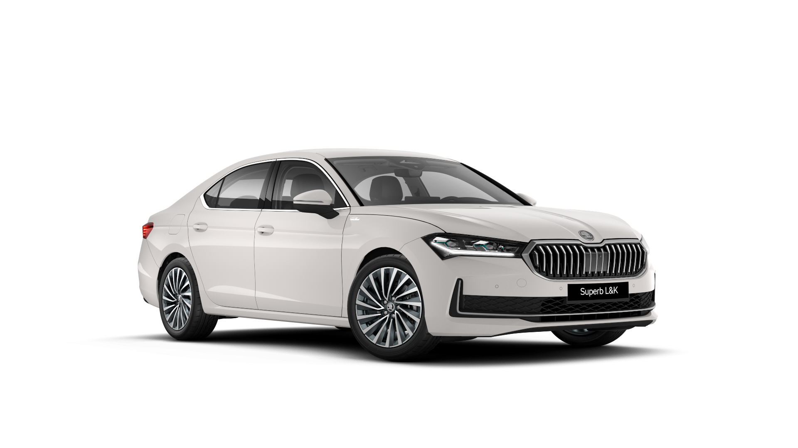

Skoda Superb

A Skoda Superb egy prémium középkategóriás autó, amely a márka csúcsváltozata, és kényelmével, tágasságával, valamint fejlett technológiai megoldásaival kiemelkedik a piacon. Az autó elérhető szedán és kombi változatban is.
Jellemzők:
- Motor: 1.4 TSI, 2.0 TDI, 2.0 TSI motorváltozatok
- Teljesítmény: 150-280 lóerő
- Hajtás: Elsőkerék-hajtás / 4x4
- Átlagfogyasztás: 4.0-7.0 liter/100 km
- Biztonsági jellemzők: Frontális ütközéssegítő, automatikus vészfékezés, adaptív sebességtartó automatikus rendszer
Ár:
| Modell | Ár (HUF) | Motor | Hajtás |
|---|---|---|---|
| Skoda Superb Alap | 8.500.000 Ft | 1.4 TSI | Elsőkerék-hajtás |
| Skoda Superb Ambition | 9.500.000 Ft | 2.0 TDI | 4x4 |
| Skoda Superb Style | 11.000.000 Ft | 2.0 TSI | 4x4 |
| Skoda Superb Laurin & Klement | 12.500.000 Ft | 2.0 TDI | 4x4 |
További információkért kérjük, vegye fel velünk a kapcsolatot!